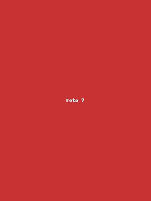
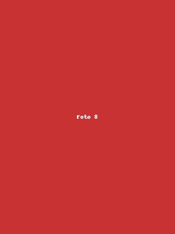
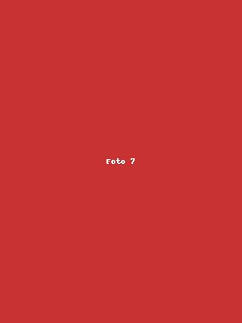
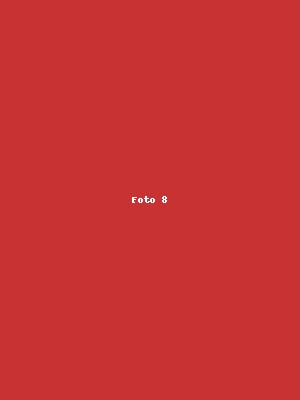

Minha carta para você
Meu amor,
Antes de te conhecer, eu já carregava cicatrizes — você também.
Nossas histórias anteriores deixaram marcas, dores silenciosas, e talvez até a certeza de que a gente não queria mais arriscar.
Mas o universo, do seu jeito misterioso, foi deixando sinais.
Discretos, mas constantes.
Te vi antes mesmo de te ver.
Em sonhos, em silêncios que pediam por alguém como você.
Te reconheci sem nunca ter te tocado.
Quando você chegou, algo dentro de mim acalmou.
O caos virou paz. A desconfiança virou cuidado.
E a vida, que já foi tão pesada, se tornou mais leve com o som do seu riso.
Nosso encontro foi um farol na noite mais escura.
Foi resposta em forma de abraço.
Foi um “eu tô aqui” quando o mundo inteiro parecia distante.
Você me faz tão bem, e eu quero que você sinta isso todos os dias.
Quero ser o motivo da tua segurança, da tua paz, do teu sorriso bobo ao acordar.
Prometo não gerar incertezas onde só deve existir amor.
Prometo ser abrigo, presença, verdade.
Porque entre todos os sinais, você foi o mais claro de todos:
o meu caminho é você.
 ❤️
❤️

❤️

❤️
❤️
❤️
❤️
❤️
❤️

❤️

❤️
❤️
❤️
❤️